登録方法、投票券の集め方、後援の使い方をまとめています。
DuckADは広告視聴やストリーミングを通して音楽番組の投票券を獲得できるアプリです。獲得した投票券は音楽番組の投票や後援に使えます。
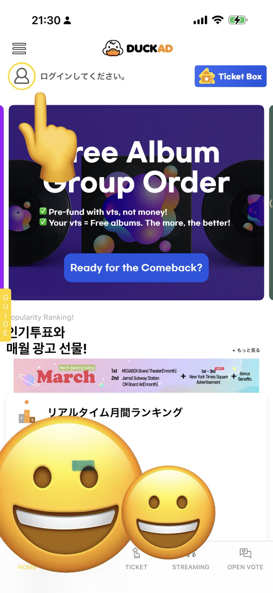
ホーム画面左上のプロフィールアイコンをタップします。
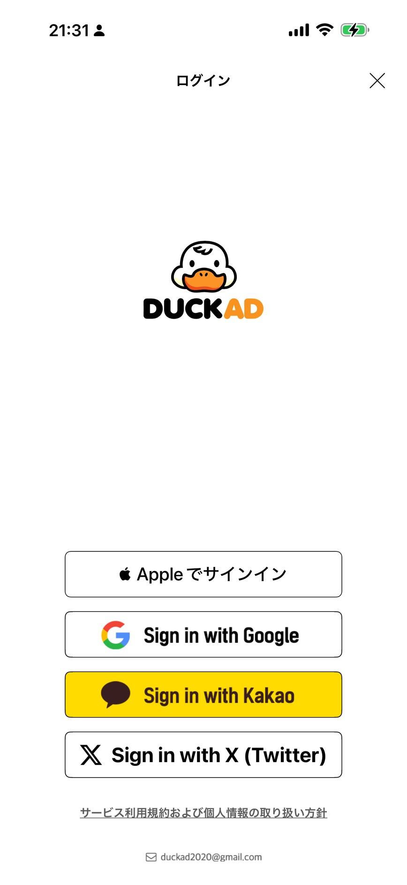
Apple / Google / X / Kakao など好きな方法でログインします。
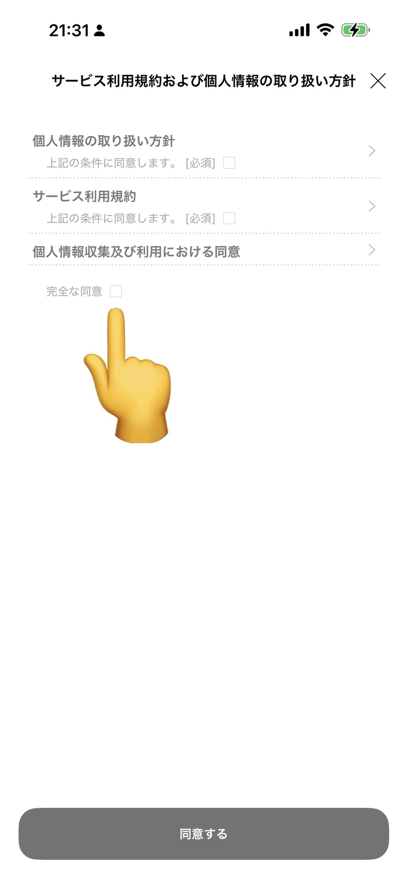
利用規約と個人情報の取り扱いを確認してチェックを入れます。
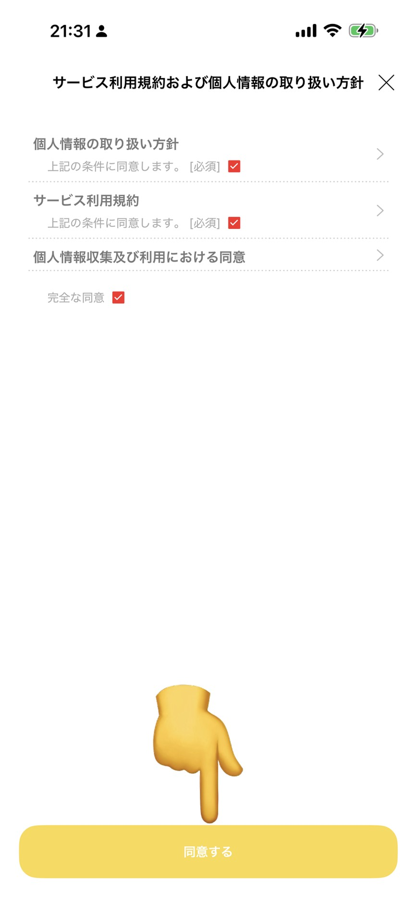
「同意する」をタップして登録を完了します。
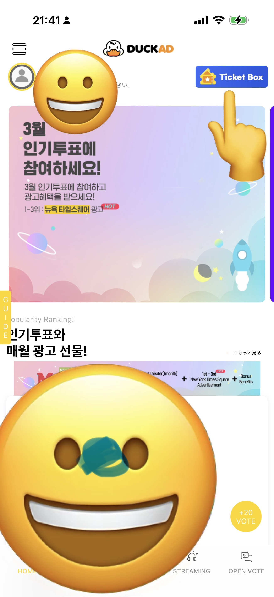
ホーム画面の「Ticket Box」をタップします。
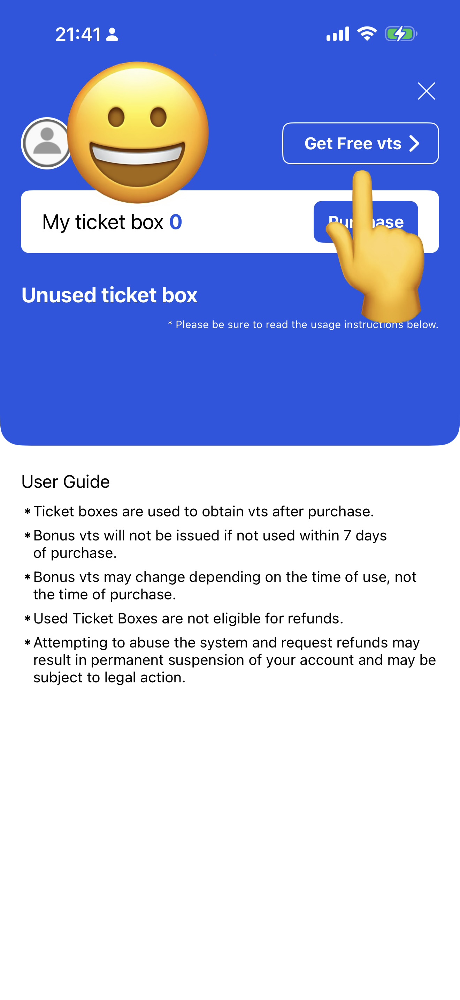
「Get Free vts」をタップして無料獲得ページを開きます。
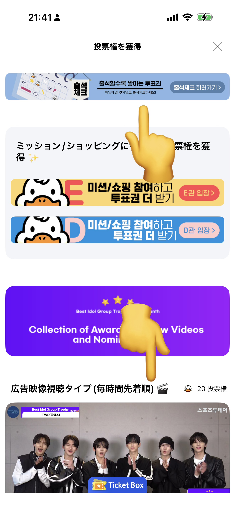
出席チェック（ログインボーナス）や広告動画視聴で投票券を獲得します。
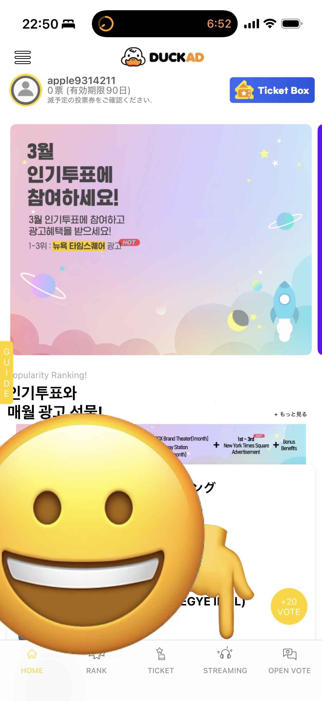
画面下の「STREAMING」をタップします。
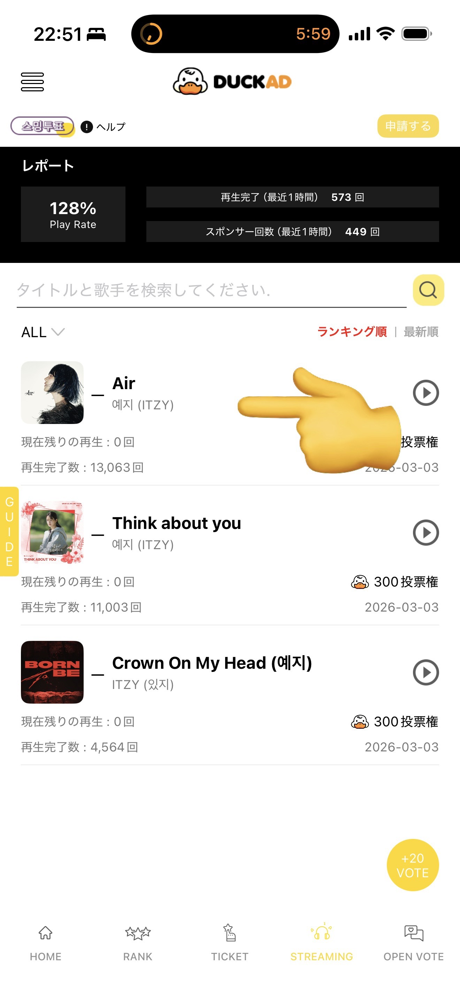
再生したい楽曲の再生ボタンを押します。
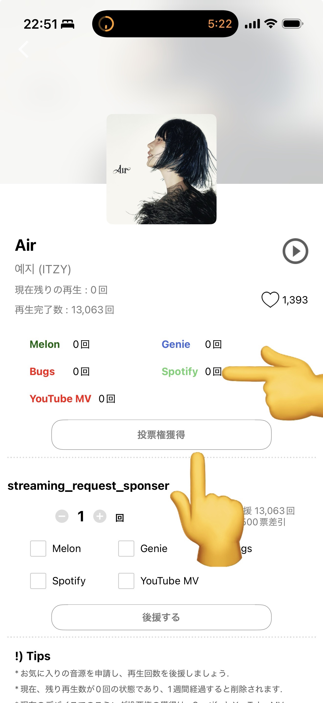
再生完了後に「投票権獲得」をタップして受け取ります。Spotify Premiumは再生完了通知まで再生してください。
まず「STREAMING」を開きます。
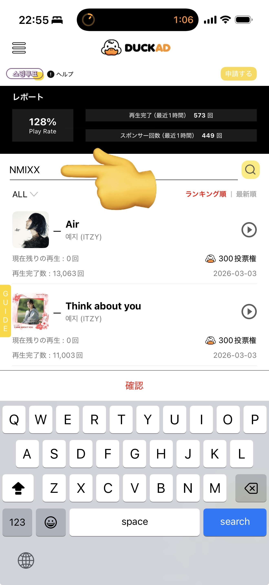
検索欄に「NMIXX」と入力して楽曲を探します。
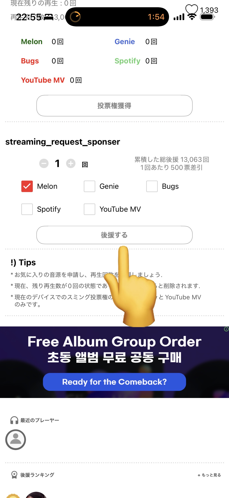
利用するサービスを選び「後援する」をタップします。後援は誰でも参加できます。
500票分集める必要があるため、できるだけ Melon → Genie → Bugs を優先して選んでください。